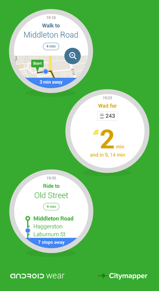

Citymapper executive to governments: 'Open more data so we can improve your cities'
The size and number of businesses built on open data is growing every year. Groups are using it to innovate, spot gaps in markets and create valuable products and services that transform the ways we live. Citymapper is one of the best-known open data success stories.
The popular real-time public transport app has a central mission: to make cities easier to use. Whether you’re new to a city and need help negotiating its transport system, or a commuter in your home town wanting the quickest (and driest) route home, Citymapper helps you get from A to B. It’ll even tell you when to get off the bus, and, for the health conscious, how many calories you’re burning.
Citymapper works on iOS, Android and the web. It uses open data from Transport for London, OpenStreetMaps, Foursquare, Google, Apple, Cyclestreets, and other sources. Its weather updates are powered by Forecast.io. Along with London, the app now works in New York, Paris, Berlin, Washington DC, Madrid, Boston, Barcelona, San Francisco, Singapore, Mexico DF, Toronto… the list goes on.
I caught up with Citymapper’s General Manager Omid Ashtari at Bloomberg’s Smarter Cities conference on June 18, part of UK tech week.

Omid Ashtari
Hi Omid! You’ve been at Citymapper for around a year and a half now. How did you get there?
I worked at Google for seven years on a bunch of different things – maps and driverless car stuff – it was all quite exciting. I really got a passion for the location space and moved to a startup called Foursquare, which I then set up here in Europe.
Since then I’ve got really excited about the nexus of location and mobile. In Citymapper I saw the opportunity to be a super innovative company that takes on a space thought to be conceded to the Googles and other big companies. It seemed like a really exciting opportunity. As the first business person I came in and really loved the team, the founder and the product so it was a no-brainer.
When did you start seeing open data as being central to the value of your work?
From the beginning, frankly. The exciting thing about what’s going on here is that London, and the UK as a whole, is really progressive in terms of embracing open data, which we’re quite happy about. Citymapper was created here because of the existence of open data. It’s the essential backbone of what we’re working on.
We are seeing open data being embraced globally now. People are realising that it’s required for cities to put data out there. It’s slow progress in some places, which is frustrating, due to political issues – whether power issues or people just not getting it. But at least we’re seeing a trend that’s going in the right direction.
Which arguments do you think work best in promoting the benefits of opening data to groups like transport authorities?
Building apps isn’t easy, especially for consumers that are as demanding as those we face today. They want their apps to be integrated with their Apple watch and their android wear device. They want the app to have all the bells and whistles and news technology that’s out there. The problem with agency-created apps is that usually they’re not built in-house, they’re built by third parties. You have a cycle of putting tenders out and having companies build the apps. But as soon as an app hits the market the specs that were defined a year ago are already out of date. The apps cannot keep up.
I think we [developers] should do what we’re best at and they [governments] should do what they’re best at. [Transport authorities] deliver clean, on-time, reliable public transport and we'll take the data and build the best in class, cutting-edge app that has really cool things. Citymapper has context-aware direction data we give you for public transport, and ‘get off the bus’ alerts, and tube cycle routing, and all the other things we’ve build into the app that makes it so successful.
Are there any other challenges you face in innovating?
The biggest challenges we face are the ones that come with being a company with global ambitions that wants to make the best app possible, locally.
Also, the acquisition of data isn’t as embraced in all places as it should be. There are different levels of data: static data, which by now everyone more or less agrees should be there, even though some places don’t have it. Then there’s the realm of real-time data, which, for travel, allows people to see how their journeys might be affected by traffic. Even those who know their commute really well will want to know whether their bus is five or 10 minutes away, especially if it’s raining.
Citymapper can give you that information if we have real-time data feeds from transport authorities. We want to see transport authorities embracing and understanding this. Ultimately our goals are the same: we want more people to use public transport and have a satisfactory experience when they’re doing so.
Where do you see open data going in the next 10 years?
Look, I think data is being created in many different silos at the moment. Open data is only really powerful when you can see trends across data sources and correlate them and do things. So I think interoperability of open data and data sources in different areas is going to be a big issue. Hopefully we’ll think about those things and have a way to exchange information.
If you have ideas or experience in open data that you'd like to share, pitch us a blog or tweet us at @ODIHQ